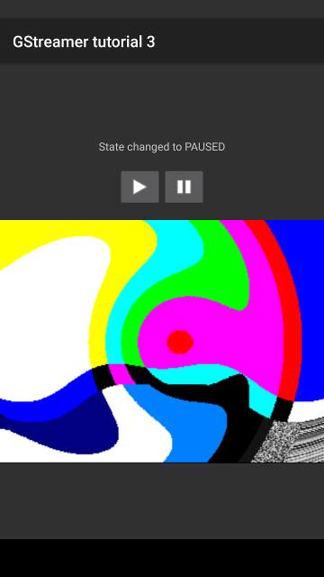

Android tutorial 3: Video
Goal

Except for Basic tutorial 5: GUI toolkit integration, which embedded a video window on a GTK application, all tutorials so far relied on GStreamer video sinks to create a window to display their contents. The video sink on Android is not capable of creating its own window, so a drawing surface always needs to be provided. This tutorial shows:
- How to allocate a drawing surface on the Android layout and pass it to GStreamer
- How to keep GStreamer posted on changes to the surface
Introduction
Since Android does not provide a windowing system, a GStreamer video
sink cannot create pop-up windows as it would do on a Desktop platform.
Fortunately, the VideoOverlay interface allows providing video sinks with
an already created window onto which they can draw, as we have seen in
Basic tutorial 5: GUI toolkit integration.
In this tutorial, a
SurfaceView
widget (actually, a subclass of it) is placed on the main layout. When
Android informs the application that a surface has been created for this
widget, we pass it to the C code which stores it. The
check_initialization_complete() method explained in the previous
tutorial is extended so that GStreamer is not considered initialized
until a main loop is running and a drawing surface has been received.
A video surface on Android [Java code]
src/org/freedesktop/gstreamer/tutorials/tutorial_3/Tutorial3.java
package org.freedesktop.gstreamer.tutorials.tutorial_3;
import android.app.Activity;
import android.os.Bundle;
import android.util.Log;
import android.view.SurfaceHolder;
import android.view.SurfaceView;
import android.view.View;
import android.view.View.OnClickListener;
import android.widget.ImageButton;
import android.widget.TextView;
import android.widget.Toast;
import org.freedesktop.gstreamer.GStreamer;
public class Tutorial3 extends Activity implements SurfaceHolder.Callback {
private native void nativeInit(); // Initialize native code, build pipeline, etc
private native void nativeFinalize(); // Destroy pipeline and shutdown native code
private native void nativePlay(); // Set pipeline to PLAYING
private native void nativePause(); // Set pipeline to PAUSED
private static native boolean nativeClassInit(); // Initialize native class: cache Method IDs for callbacks
private native void nativeSurfaceInit(Object surface);
private native void nativeSurfaceFinalize();
private long native_custom_data; // Native code will use this to keep private data
private boolean is_playing_desired; // Whether the user asked to go to PLAYING
// Called when the activity is first created.
@Override
public void onCreate(Bundle savedInstanceState)
{
super.onCreate(savedInstanceState);
// Initialize GStreamer and warn if it fails
try {
GStreamer.init(this);
} catch (Exception e) {
Toast.makeText(this, e.getMessage(), Toast.LENGTH_LONG).show();
finish();
return;
}
setContentView(R.layout.main);
ImageButton play = (ImageButton) this.findViewById(R.id.button_play);
play.setOnClickListener(new OnClickListener() {
public void onClick(View v) {
is_playing_desired = true;
nativePlay();
}
});
ImageButton pause = (ImageButton) this.findViewById(R.id.button_stop);
pause.setOnClickListener(new OnClickListener() {
public void onClick(View v) {
is_playing_desired = false;
nativePause();
}
});
SurfaceView sv = (SurfaceView) this.findViewById(R.id.surface_video);
SurfaceHolder sh = sv.getHolder();
sh.addCallback(this);
if (savedInstanceState != null) {
is_playing_desired = savedInstanceState.getBoolean("playing");
Log.i ("GStreamer", "Activity created. Saved state is playing:" + is_playing_desired);
} else {
is_playing_desired = false;
Log.i ("GStreamer", "Activity created. There is no saved state, playing: false");
}
// Start with disabled buttons, until native code is initialized
this.findViewById(R.id.button_play).setEnabled(false);
this.findViewById(R.id.button_stop).setEnabled(false);
nativeInit();
}
protected void onSaveInstanceState (Bundle outState) {
Log.d ("GStreamer", "Saving state, playing:" + is_playing_desired);
outState.putBoolean("playing", is_playing_desired);
}
protected void onDestroy() {
nativeFinalize();
super.onDestroy();
}
// Called from native code. This sets the content of the TextView from the UI thread.
private void setMessage(final String message) {
final TextView tv = (TextView) this.findViewById(R.id.textview_message);
runOnUiThread (new Runnable() {
public void run() {
tv.setText(message);
}
});
}
// Called from native code. Native code calls this once it has created its pipeline and
// the main loop is running, so it is ready to accept commands.
private void onGStreamerInitialized () {
Log.i ("GStreamer", "Gst initialized. Restoring state, playing:" + is_playing_desired);
// Restore previous playing state
if (is_playing_desired) {
nativePlay();
} else {
nativePause();
}
// Re-enable buttons, now that GStreamer is initialized
final Activity activity = this;
runOnUiThread(new Runnable() {
public void run() {
activity.findViewById(R.id.button_play).setEnabled(true);
activity.findViewById(R.id.button_stop).setEnabled(true);
}
});
}
static {
System.loadLibrary("gstreamer_android");
System.loadLibrary("tutorial-3");
nativeClassInit();
}
public void surfaceChanged(SurfaceHolder holder, int format, int width,
int height) {
Log.d("GStreamer", "Surface changed to format " + format + " width "
+ width + " height " + height);
nativeSurfaceInit (holder.getSurface());
}
public void surfaceCreated(SurfaceHolder holder) {
Log.d("GStreamer", "Surface created: " + holder.getSurface());
}
public void surfaceDestroyed(SurfaceHolder holder) {
Log.d("GStreamer", "Surface destroyed");
nativeSurfaceFinalize ();
}
}
This tutorial continues where the previous one left, adding a video surface to the layout and changing the GStreamer pipeline to produce video instead of audio. Only the parts of the code that are new will be discussed.
private native void nativeSurfaceInit(Object surface);
private native void nativeSurfaceFinalize();
Two new entry points to the C code are defined,
nativeSurfaceInit() and nativeSurfaceFinalize(), which we will call
when the video surface becomes available and when it is about to be
destroyed, respectively.
SurfaceView sv = (SurfaceView) this.findViewById(R.id.surface_video);
SurfaceHolder sh = sv.getHolder();
sh.addCallback(this);
In onCreate(), we retrieve the
SurfaceView,
and then register ourselves to receive notifications about the surface
state through the
SurfaceHolder
interface. This is why we declared this Activity as implementing the
SurfaceHolder.Callback
interface in line 16.
public void surfaceChanged(SurfaceHolder holder, int format, int width,
int height) {
Log.d("GStreamer", "Surface changed to format " + format + " width "
+ width + " height " + height);
nativeSurfaceInit (holder.getSurface());
}
public void surfaceCreated(SurfaceHolder holder) {
Log.d("GStreamer", "Surface created: " + holder.getSurface());
}
public void surfaceDestroyed(SurfaceHolder holder) {
Log.d("GStreamer", "Surface destroyed");
nativeSurfaceFinalize ();
}
This interface is composed of the three methods above, which get called
when the geometry of the surface changes, when the surface is created
and when it is about to be destroyed. surfaceChanged() always gets
called at least once, right after surfaceCreated(), so we will use it
to notify GStreamer about the new surface. We use
surfaceDestroyed() to tell GStreamer to stop using this surface.
Let’s review the C code to see what these functions do.
A video surface on Android [C code]
jni/tutorial-3.c
#include <string.h>
#include <stdint.h>
#include <jni.h>
#include <android/log.h>
#include <android/native_window.h>
#include <android/native_window_jni.h>
#include <gst/gst.h>
#include <gst/video/video.h>
#include <pthread.h>
GST_DEBUG_CATEGORY_STATIC (debug_category);
#define GST_CAT_DEFAULT debug_category
/*
* These macros provide a way to store the native pointer to CustomData, which might be 32 or 64 bits, into
* a jlong, which is always 64 bits, without warnings.
*/
#if GLIB_SIZEOF_VOID_P == 8
## define GET_CUSTOM_DATA(env, thiz, fieldID) (CustomData *)(*env)->GetLongField (env, thiz, fieldID)
## define SET_CUSTOM_DATA(env, thiz, fieldID, data) (*env)->SetLongField (env, thiz, fieldID, (jlong)data)
#else
## define GET_CUSTOM_DATA(env, thiz, fieldID) (CustomData *)(jint)(*env)->GetLongField (env, thiz, fieldID)
## define SET_CUSTOM_DATA(env, thiz, fieldID, data) (*env)->SetLongField (env, thiz, fieldID, (jlong)(jint)data)
#endif
/* Structure to contain all our information, so we can pass it to callbacks */
typedef struct _CustomData {
jobject app; /* Application instance, used to call its methods. A global reference is kept. */
GstElement *pipeline; /* The running pipeline */
GMainContext *context; /* GLib context used to run the main loop */
GMainLoop *main_loop; /* GLib main loop */
gboolean initialized; /* To avoid informing the UI multiple times about the initialization */
GstElement *video_sink; /* The video sink element which receives VideoOverlay commands */
ANativeWindow *native_window; /* The Android native window where video will be rendered */
} CustomData;
/* These global variables cache values which are not changing during execution */
static pthread_t gst_app_thread;
static pthread_key_t current_jni_env;
static JavaVM *java_vm;
static jfieldID custom_data_field_id;
static jmethodID set_message_method_id;
static jmethodID on_gstreamer_initialized_method_id;
/*
* Private methods
*/
/* Register this thread with the VM */
static JNIEnv *attach_current_thread (void) {
JNIEnv *env;
JavaVMAttachArgs args;
GST_DEBUG ("Attaching thread %p", g_thread_self ());
args.version = JNI_VERSION_1_4;
args.name = NULL;
args.group = NULL;
if ((*java_vm)->AttachCurrentThread (java_vm, &env, &args) < 0) {
GST_ERROR ("Failed to attach current thread");
return NULL;
}
return env;
}
/* Unregister this thread from the VM */
static void detach_current_thread (void *env) {
GST_DEBUG ("Detaching thread %p", g_thread_self ());
(*java_vm)->DetachCurrentThread (java_vm);
}
/* Retrieve the JNI environment for this thread */
static JNIEnv *get_jni_env (void) {
JNIEnv *env;
if ((env = pthread_getspecific (current_jni_env)) == NULL) {
env = attach_current_thread ();
pthread_setspecific (current_jni_env, env);
}
return env;
}
/* Change the content of the UI's TextView */
static void set_ui_message (const gchar *message, CustomData *data) {
JNIEnv *env = get_jni_env ();
GST_DEBUG ("Setting message to: %s", message);
jstring jmessage = (*env)->NewStringUTF(env, message);
(*env)->CallVoidMethod (env, data->app, set_message_method_id, jmessage);
if ((*env)->ExceptionCheck (env)) {
GST_ERROR ("Failed to call Java method");
(*env)->ExceptionClear (env);
}
(*env)->DeleteLocalRef (env, jmessage);
}
/* Retrieve errors from the bus and show them on the UI */
static void error_cb (GstBus *bus, GstMessage *msg, CustomData *data) {
GError *err;
gchar *debug_info;
gchar *message_string;
gst_message_parse_error (msg, &err, &debug_info);
message_string = g_strdup_printf ("Error received from element %s: %s", GST_OBJECT_NAME (msg->src), err->message);
g_clear_error (&err);
g_free (debug_info);
set_ui_message (message_string, data);
g_free (message_string);
gst_element_set_state (data->pipeline, GST_STATE_NULL);
}
/* Notify UI about pipeline state changes */
static void state_changed_cb (GstBus *bus, GstMessage *msg, CustomData *data) {
GstState old_state, new_state, pending_state;
gst_message_parse_state_changed (msg, &old_state, &new_state, &pending_state);
/* Only pay attention to messages coming from the pipeline, not its children */
if (GST_MESSAGE_SRC (msg) == GST_OBJECT (data->pipeline)) {
gchar *message = g_strdup_printf("State changed to %s", gst_element_state_get_name(new_state));
set_ui_message(message, data);
g_free (message);
}
}
/* Check if all conditions are met to report GStreamer as initialized.
* These conditions will change depending on the application */
static void check_initialization_complete (CustomData *data) {
JNIEnv *env = get_jni_env ();
if (!data->initialized && data->native_window && data->main_loop) {
GST_DEBUG ("Initialization complete, notifying application. native_window:%p main_loop:%p", data->native_window, data->main_loop);
/* The main loop is running and we received a native window, inform the sink about it */
gst_video_overlay_set_window_handle (GST_VIDEO_OVERLAY (data->video_sink), (guintptr)data->native_window);
(*env)->CallVoidMethod (env, data->app, on_gstreamer_initialized_method_id);
if ((*env)->ExceptionCheck (env)) {
GST_ERROR ("Failed to call Java method");
(*env)->ExceptionClear (env);
}
data->initialized = TRUE;
}
}
/* Main method for the native code. This is executed on its own thread. */
static void *app_function (void *userdata) {
JavaVMAttachArgs args;
GstBus *bus;
CustomData *data = (CustomData *)userdata;
GSource *bus_source;
GError *error = NULL;
GST_DEBUG ("Creating pipeline in CustomData at %p", data);
/* Create our own GLib Main Context and make it the default one */
data->context = g_main_context_new ();
g_main_context_push_thread_default(data->context);
/* Build pipeline */
data->pipeline = gst_parse_launch("videotestsrc ! warptv ! videoconvert ! autovideosink", &error);
if (error) {
gchar *message = g_strdup_printf("Unable to build pipeline: %s", error->message);
g_clear_error (&error);
set_ui_message(message, data);
g_free (message);
return NULL;
}
/* Set the pipeline to READY, so it can already accept a window handle, if we have one */
gst_element_set_state(data->pipeline, GST_STATE_READY);
data->video_sink = gst_bin_get_by_interface(GST_BIN(data->pipeline), GST_TYPE_VIDEO_OVERLAY);
if (!data->video_sink) {
GST_ERROR ("Could not retrieve video sink");
return NULL;
}
/* Instruct the bus to emit signals for each received message, and connect to the interesting signals */
bus = gst_element_get_bus (data->pipeline);
bus_source = gst_bus_create_watch (bus);
g_source_set_callback (bus_source, (GSourceFunc) gst_bus_async_signal_func, NULL, NULL);
g_source_attach (bus_source, data->context);
g_source_unref (bus_source);
g_signal_connect (G_OBJECT (bus), "message::error", (GCallback)error_cb, data);
g_signal_connect (G_OBJECT (bus), "message::state-changed", (GCallback)state_changed_cb, data);
gst_object_unref (bus);
/* Create a GLib Main Loop and set it to run */
GST_DEBUG ("Entering main loop... (CustomData:%p)", data);
data->main_loop = g_main_loop_new (data->context, FALSE);
check_initialization_complete (data);
g_main_loop_run (data->main_loop);
GST_DEBUG ("Exited main loop");
g_main_loop_unref (data->main_loop);
data->main_loop = NULL;
/* Free resources */
g_main_context_pop_thread_default(data->context);
g_main_context_unref (data->context);
gst_element_set_state (data->pipeline, GST_STATE_NULL);
gst_object_unref (data->video_sink);
gst_object_unref (data->pipeline);
return NULL;
}
/*
* Java Bindings
*/
/* Instruct the native code to create its internal data structure, pipeline and thread */
static void gst_native_init (JNIEnv* env, jobject thiz) {
CustomData *data = g_new0 (CustomData, 1);
SET_CUSTOM_DATA (env, thiz, custom_data_field_id, data);
GST_DEBUG_CATEGORY_INIT (debug_category, "tutorial-3", 0, "Android tutorial 3");
gst_debug_set_threshold_for_name("tutorial-3", GST_LEVEL_DEBUG);
GST_DEBUG ("Created CustomData at %p", data);
data->app = (*env)->NewGlobalRef (env, thiz);
GST_DEBUG ("Created GlobalRef for app object at %p", data->app);
pthread_create (&gst_app_thread, NULL, &app_function, data);
}
/* Quit the main loop, remove the native thread and free resources */
static void gst_native_finalize (JNIEnv* env, jobject thiz) {
CustomData *data = GET_CUSTOM_DATA (env, thiz, custom_data_field_id);
if (!data) return;
GST_DEBUG ("Quitting main loop...");
g_main_loop_quit (data->main_loop);
GST_DEBUG ("Waiting for thread to finish...");
pthread_join (gst_app_thread, NULL);
GST_DEBUG ("Deleting GlobalRef for app object at %p", data->app);
(*env)->DeleteGlobalRef (env, data->app);
GST_DEBUG ("Freeing CustomData at %p", data);
g_free (data);
SET_CUSTOM_DATA (env, thiz, custom_data_field_id, NULL);
GST_DEBUG ("Done finalizing");
}
/* Set pipeline to PLAYING state */
static void gst_native_play (JNIEnv* env, jobject thiz) {
CustomData *data = GET_CUSTOM_DATA (env, thiz, custom_data_field_id);
if (!data) return;
GST_DEBUG ("Setting state to PLAYING");
gst_element_set_state (data->pipeline, GST_STATE_PLAYING);
}
/* Set pipeline to PAUSED state */
static void gst_native_pause (JNIEnv* env, jobject thiz) {
CustomData *data = GET_CUSTOM_DATA (env, thiz, custom_data_field_id);
if (!data) return;
GST_DEBUG ("Setting state to PAUSED");
gst_element_set_state (data->pipeline, GST_STATE_PAUSED);
}
/* Static class initializer: retrieve method and field IDs */
static jboolean gst_native_class_init (JNIEnv* env, jclass klass) {
custom_data_field_id = (*env)->GetFieldID (env, klass, "native_custom_data", "J");
set_message_method_id = (*env)->GetMethodID (env, klass, "setMessage", "(Ljava/lang/String;)V");
on_gstreamer_initialized_method_id = (*env)->GetMethodID (env, klass, "onGStreamerInitialized", "()V");
if (!custom_data_field_id || !set_message_method_id || !on_gstreamer_initialized_method_id) {
/* We emit this message through the Android log instead of the GStreamer log because the later
* has not been initialized yet.
*/
__android_log_print (ANDROID_LOG_ERROR, "tutorial-3", "The calling class does not implement all necessary interface methods");
return JNI_FALSE;
}
return JNI_TRUE;
}
static void gst_native_surface_init (JNIEnv *env, jobject thiz, jobject surface) {
CustomData *data = GET_CUSTOM_DATA (env, thiz, custom_data_field_id);
if (!data) return;
ANativeWindow *new_native_window = ANativeWindow_fromSurface(env, surface);
GST_DEBUG ("Received surface %p (native window %p)", surface, new_native_window);
if (data->native_window) {
ANativeWindow_release (data->native_window);
if (data->native_window == new_native_window) {
GST_DEBUG ("New native window is the same as the previous one", data->native_window);
if (data->video_sink) {
gst_video_overlay_expose(GST_VIDEO_OVERLAY (data->video_sink));
gst_video_overlay_expose(GST_VIDEO_OVERLAY (data->video_sink));
}
return;
} else {
GST_DEBUG ("Released previous native window %p", data->native_window);
data->initialized = FALSE;
}
}
data->native_window = new_native_window;
check_initialization_complete (data);
}
static void gst_native_surface_finalize (JNIEnv *env, jobject thiz) {
CustomData *data = GET_CUSTOM_DATA (env, thiz, custom_data_field_id);
if (!data) return;
GST_DEBUG ("Releasing Native Window %p", data->native_window);
if (data->video_sink) {
gst_video_overlay_set_window_handle (GST_VIDEO_OVERLAY (data->video_sink), (guintptr)NULL);
gst_element_set_state (data->pipeline, GST_STATE_READY);
}
ANativeWindow_release (data->native_window);
data->native_window = NULL;
data->initialized = FALSE;
}
/* List of implemented native methods */
static JNINativeMethod native_methods[] = {
{ "nativeInit", "()V", (void *) gst_native_init},
{ "nativeFinalize", "()V", (void *) gst_native_finalize},
{ "nativePlay", "()V", (void *) gst_native_play},
{ "nativePause", "()V", (void *) gst_native_pause},
{ "nativeSurfaceInit", "(Ljava/lang/Object;)V", (void *) gst_native_surface_init},
{ "nativeSurfaceFinalize", "()V", (void *) gst_native_surface_finalize},
{ "nativeClassInit", "()Z", (void *) gst_native_class_init}
};
/* Library initializer */
jint JNI_OnLoad(JavaVM *vm, void *reserved) {
JNIEnv *env = NULL;
java_vm = vm;
if ((*vm)->GetEnv(vm, (void**) &env, JNI_VERSION_1_4) != JNI_OK) {
__android_log_print (ANDROID_LOG_ERROR, "tutorial-3", "Could not retrieve JNIEnv");
return 0;
}
jclass klass = (*env)->FindClass (env, "org/freedesktop/gstreamer/tutorials/tutorial_3/Tutorial3");
(*env)->RegisterNatives (env, klass, native_methods, G_N_ELEMENTS(native_methods));
pthread_key_create (¤t_jni_env, detach_current_thread);
return JNI_VERSION_1_4;
}
First, our CustomData structure is augmented to keep a pointer to the
video sink element and the native window
handle:
GstElement *video_sink; /* The video sink element which receives VideoOverlay commands */
ANativeWindow *native_window; /* The Android native window where video will be rendered */
The check_initialization_complete() method is also augmented so that
it requires a native window before considering GStreamer to be
initialized:
static void check_initialization_complete (CustomData *data) {
JNIEnv *env = get_jni_env ();
if (!data->initialized && data->native_window && data->main_loop) {
GST_DEBUG ("Initialization complete, notifying application. native_window:%p main_loop:%p", data->native_window, data->main_loop);
/* The main loop is running and we received a native window, inform the sink about it */
gst_video_overlay_set_window_handle (GST_VIDEO_OVERLAY (data->video_sink), (guintptr)data->native_window);
(*env)->CallVoidMethod (env, data->app, on_gstreamer_initialized_method_id);
if ((*env)->ExceptionCheck (env)) {
GST_ERROR ("Failed to call Java method");
(*env)->ExceptionClear (env);
}
data->initialized = TRUE;
}
}
Also, once the pipeline has been built and a native window has been
received, we inform the video sink of the window handle to use via the
gst_video_overlay_set_window_handle() method.
The GStreamer pipeline for this tutorial involves a videotestsrc, a
warptv psychedelic distorter effect (check out other cool video
effects in the GSTREAMER_PLUGINS_EFFECTS package), and an
autovideosink which will instantiate the adequate video sink for the
platform:
data->pipeline = gst_parse_launch("videotestsrc ! warptv ! videoconvert ! autovideosink ", &error);
Here things start to get more interesting:
/* Set the pipeline to READY, so it can already accept a window handle, if we have one */
gst_element_set_state(data->pipeline, GST_STATE_READY);
data->video_sink = gst_bin_get_by_interface(GST_BIN(data->pipeline), GST_TYPE_VIDEO_OVERLAY);
if (!data->video_sink) {
GST_ERROR ("Could not retrieve video sink");
return NULL;
}
We start by setting the pipeline to the READY state. No data flow occurs
yet, but the autovideosink will instantiate the actual sink so we can
ask for it immediately.
The gst_bin_get_by_interface() method will examine the whole pipeline
and return a pointer to an element which supports the requested
interface. We are asking for the VideoOverlay interface, explained in
Basic tutorial 5: GUI toolkit integration,
which controls how to perform rendering into foreign (non-GStreamer)
windows. The internal video sink instantiated by autovideosink is the
only element in this pipeline implementing it, so it will be returned.
Now we will implement the two native functions called by the Java code when the drawing surface becomes available or is about to be destroyed:
static void gst_native_surface_init (JNIEnv *env, jobject thiz, jobject surface) {
CustomData *data = GET_CUSTOM_DATA (env, thiz, custom_data_field_id);
if (!data) return;
ANativeWindow *new_native_window = ANativeWindow_fromSurface(env, surface);
GST_DEBUG ("Received surface %p (native window %p)", surface, new_native_window);
if (data->native_window) {
ANativeWindow_release (data->native_window);
if (data->native_window == new_native_window) {
GST_DEBUG ("New native window is the same as the previous one", data->native_window);
if (data->video_sink) {
gst_video_overlay_expose(GST_VIDEO_OVERLAY (data->video_sink));
gst_video_overlay_expose(GST_VIDEO_OVERLAY (data->video_sink));
}
return;
} else {
GST_DEBUG ("Released previous native window %p", data->native_window);
data->initialized = FALSE;
}
}
data->native_window = new_native_window;
check_initialization_complete (data);
}
This method is responsible for providing the video sink with the window
handle coming from the Java code. We are passed a
Surface
object, and we use ANativeWindow_fromSurface() to obtain the
underlying native window pointer. There is no official online
documentation for the NDK, but fortunately the header files are well
commented. Native window management functions can be found in
$(ANDROID_NDK_ROOT)\platforms\android-9\arch-arm\usr\include\android\native_window.h and native_window_jni.h
If we had already stored a native window, the one we just received can
either be a new one, or just an update of the one we have. If the
pointers are the same, we assume the geometry of the surface has
changed, and simply instruct the video sink to redraw itself, via the
gst_video_overlay_expose() method. The video sink will recover the new
size from the surface itself, so we do not need to bother about it
here. We need to call gst_video_overlay_expose() twice because of the way
the surface changes propagate down the OpenGL ES / EGL pipeline (The
only video sink available for Android in GStreamer uses OpenGL
ES). By the time we call the first expose, the surface that the sink
will pick up still contains the old size.
On the other hand, if the pointers are different, we mark GStreamer as
not being initialized. Next time we call
check_initialization_complete(), the video sink will be informed of
the new window handle.
We finally store the new window handle and call
check_initialization_complete() to inform the Java code that
everything is set up, if that is the case.
static void gst_native_surface_finalize (JNIEnv *env, jobject thiz) {
CustomData *data = GET_CUSTOM_DATA (env, thiz, custom_data_field_id);
if (!data) return;
GST_DEBUG ("Releasing Native Window %p", data->native_window);
if (data->video_sink) {
gst_video_overlay_set_window_handle (GST_VIDEO_OVERLAY (data->video_sink), (guintptr)NULL);
gst_element_set_state (data->pipeline, GST_STATE_READY);
}
ANativeWindow_release (data->native_window);
data->native_window = NULL;
data->initialized = FALSE;
}
The complementary function, gst_native_surface_finalize() is called
when a surface is about to be destroyed and should not be used anymore.
Here, we simply instruct the video sink to stop using the window handle
and set the pipeline to READY so no rendering occurs. We release the
window pointer we had stored with ANativeWindow_release(), and mark
GStreamer as not being initialized anymore.
And this is all there is to it, regarding the main code. Only a couple
of details remain, the subclass we made for SurfaceView and the
Android.mk file.
GStreamerSurfaceView, a convenient SurfaceView wrapper [Java code]
By default, SurfaceView does not have any particular size, so it expands to use all the space the layout can give it. While this might be convenient sometimes, it does not allow a great deal of control. In particular, when the surface does not have the same aspect ratio as the media, the sink will add black borders (the known “letterbox” or “pillarbox” effect), which is an unnecessary work (and a waste of battery).
The subclass of SurfaceView presented here overrides the onMeasure() method to report the actual media size, so the surface can adapt to any layout while preserving the media aspect ratio.
Since in this tutorial the media size is known beforehand, it is hardcoded in the GStreamerSurfaceView class for simplicity. The next tutorial shows how it can be recovered at runtime and passed onto the surface.
src/org/freedesktop/gstreamer/tutorials/tutorial_3/GStreamerSurfaceView.java
package org.freedesktop.gstreamer.tutorials.tutorial_3;
import android.content.Context;
import android.util.AttributeSet;
import android.util.Log;
import android.view.SurfaceView;
import android.view.View;
// A simple SurfaceView whose width and height can be set from the outside
public class GStreamerSurfaceView extends SurfaceView {
public int media_width = 320;
public int media_height = 240;
// Mandatory constructors, they do not do much
public GStreamerSurfaceView(Context context, AttributeSet attrs,
int defStyle) {
super(context, attrs, defStyle);
}
public GStreamerSurfaceView(Context context, AttributeSet attrs) {
super(context, attrs);
}
public GStreamerSurfaceView (Context context) {
super(context);
}
// Called by the layout manager to find out our size and give us some rules.
// We will try to maximize our size, and preserve the media's aspect ratio if
// we are given the freedom to do so.
@Override
protected void onMeasure(int widthMeasureSpec, int heightMeasureSpec) {
int width = 0, height = 0;
int wmode = View.MeasureSpec.getMode(widthMeasureSpec);
int hmode = View.MeasureSpec.getMode(heightMeasureSpec);
int wsize = View.MeasureSpec.getSize(widthMeasureSpec);
int hsize = View.MeasureSpec.getSize(heightMeasureSpec);
Log.i ("GStreamer", "onMeasure called with " + media_width + "x" + media_height);
// Obey width rules
switch (wmode) {
case View.MeasureSpec.AT_MOST:
if (hmode == View.MeasureSpec.EXACTLY) {
width = Math.min(hsize * media_width / media_height, wsize);
break;
}
case View.MeasureSpec.EXACTLY:
width = wsize;
break;
case View.MeasureSpec.UNSPECIFIED:
width = media_width;
}
// Obey height rules
switch (hmode) {
case View.MeasureSpec.AT_MOST:
if (wmode == View.MeasureSpec.EXACTLY) {
height = Math.min(wsize * media_height / media_width, hsize);
break;
}
case View.MeasureSpec.EXACTLY:
height = hsize;
break;
case View.MeasureSpec.UNSPECIFIED:
height = media_height;
}
// Finally, calculate best size when both axis are free
if (hmode == View.MeasureSpec.AT_MOST && wmode == View.MeasureSpec.AT_MOST) {
int correct_height = width * media_height / media_width;
int correct_width = height * media_width / media_height;
if (correct_height < height)
height = correct_height;
else
width = correct_width;
}
// Obey minimum size
width = Math.max (getSuggestedMinimumWidth(), width);
height = Math.max (getSuggestedMinimumHeight(), height);
setMeasuredDimension(width, height);
}
}
A video surface on Android [Android.mk]
/jni/Android.mk
LOCAL_PATH := $(call my-dir)
include $(CLEAR_VARS)
LOCAL_MODULE := tutorial-3
LOCAL_SRC_FILES := tutorial-3.c
LOCAL_SHARED_LIBRARIES := gstreamer_android
LOCAL_LDLIBS := -llog -landroid
include $(BUILD_SHARED_LIBRARY)
ifndef GSTREAMER_ROOT
ifndef GSTREAMER_ROOT_ANDROID
$(error GSTREAMER_ROOT_ANDROID is not defined!)
endif
GSTREAMER_ROOT := $(GSTREAMER_ROOT_ANDROID)
endif
GSTREAMER_NDK_BUILD_PATH := $(GSTREAMER_ROOT)/share/gst-android/ndk-build/
include $(GSTREAMER_NDK_BUILD_PATH)/plugins.mk
GSTREAMER_PLUGINS := $(GSTREAMER_PLUGINS_CORE) $(GSTREAMER_PLUGINS_SYS) $(GSTREAMER_PLUGINS_EFFECTS)
GSTREAMER_EXTRA_DEPS := gstreamer-video-1.0
include $(GSTREAMER_NDK_BUILD_PATH)/gstreamer.mk
Worth mentioning is the -landroid library being used to allow
interaction with the native windows, and the different plugin
packages: GSTREAMER_PLUGINS_SYS for the system-dependent video sink
and GSTREAMER_PLUGINS_EFFECTS for the warptv element. This tutorial
requires the gstreamer-video library to use the
VideoOverlay interface and the video helper methods.
Conclusion
This tutorial has shown:
- How to display video on Android using a
SurfaceView and
the
VideoOverlayinterface. - How to be aware of changes in the surface’s size using SurfaceView’s callbacks.
- How to report the media size to the Android layout engine.
The following tutorial plays an actual clip and adds a few more controls to this tutorial in order to build a simple media player.
It has been a pleasure having you here, and see you soon!
The results of the search are